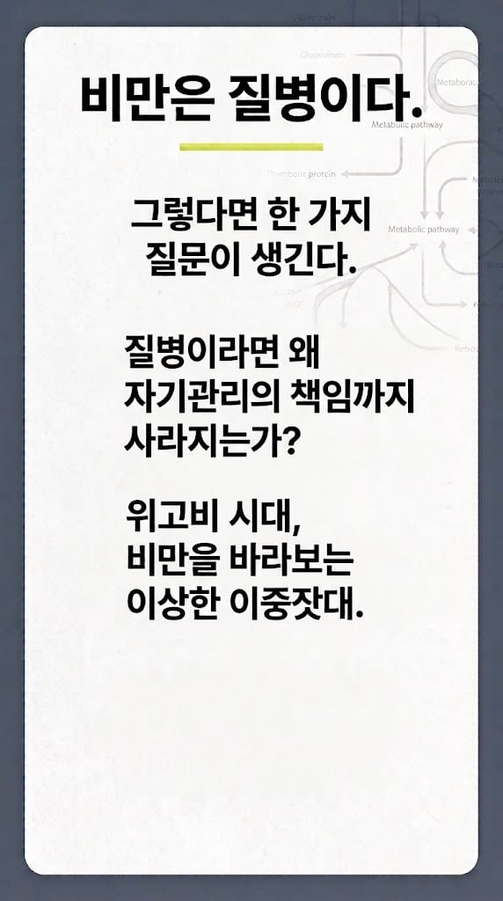
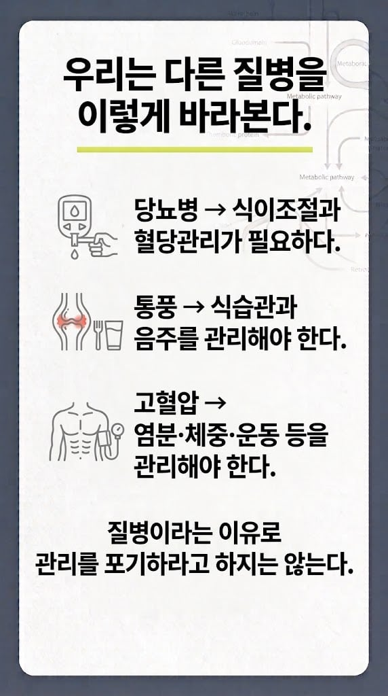
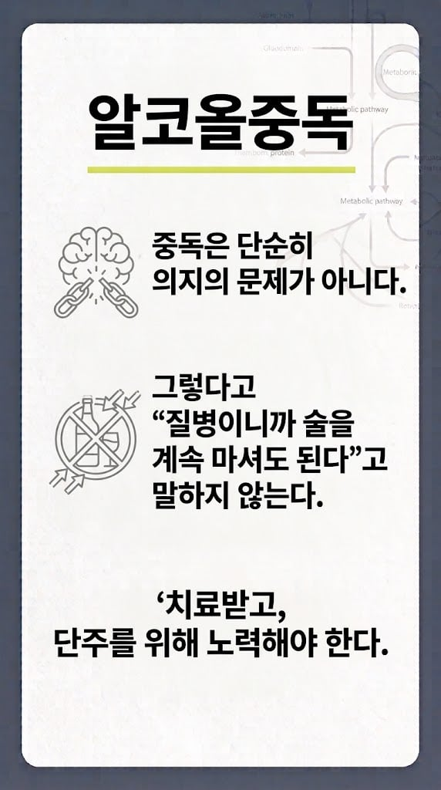
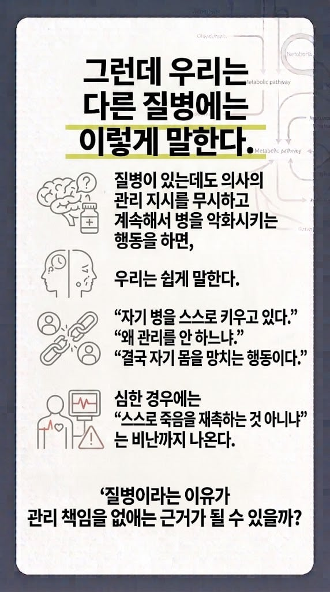
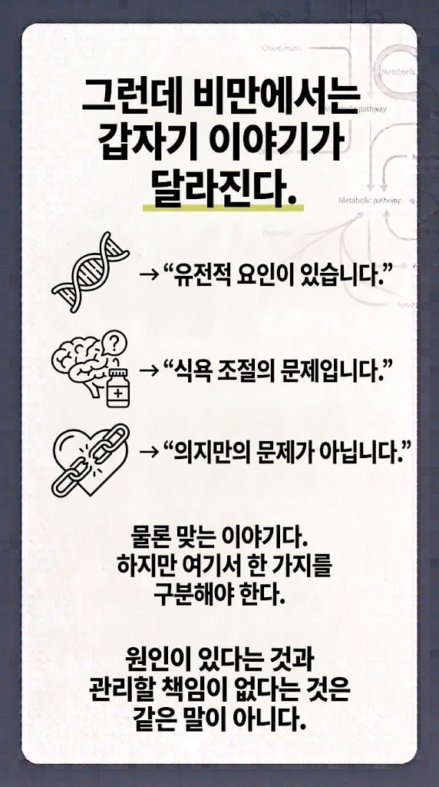
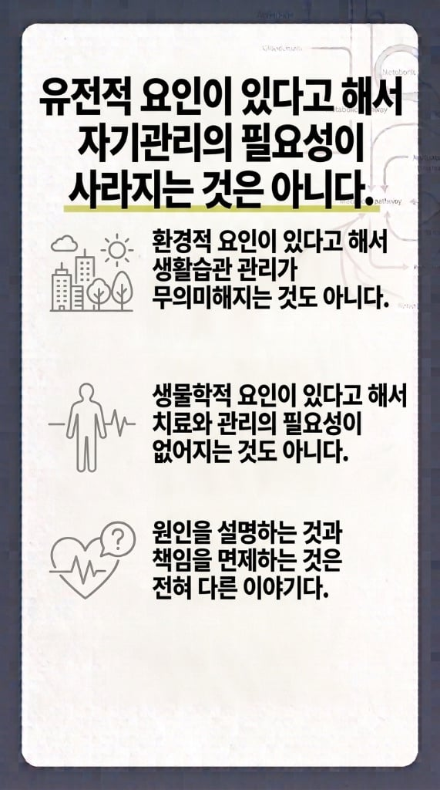
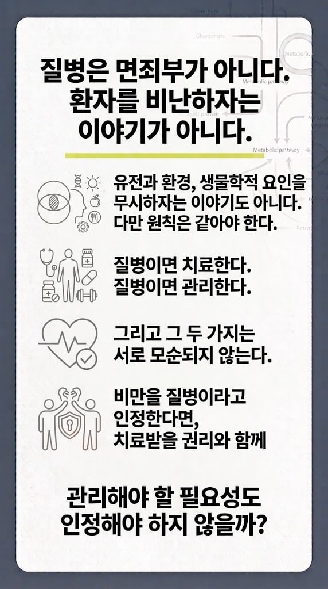

https://www.dogdrip.net/729679752
여기 댓보다보니 재밌어서 퍼옴







https://www.dogdrip.net/729679752
여기 댓보다보니 재밌어서 퍼옴
이런글올리면 자기관리못하는 돼지새끼들이 화냄 ㅋ
여기는 왜 이렇게 비만에 우호적인지 모르겠네. 글 내용 다 맞는데 비추가 ㅋㅋ
자연선택이 안되니까 인간이 겪는것들이..
보다가 재밌어서가 아니라 니도 한소리하고 싶어서 기어나왔네 일침병새끼들은 바뀌는게 없어
그니까 너는 당뇨,고혈압,알콜중독,비만등
다욕하겠다 이거네 ㄷㄷ
관리의 필요성은 맞는데 그렇다고 어휴 관리만 좀 하면되는걸 안하네 ㅉㅉ 혐오스런 비만인들~하는 시각은 없어져야지. 당뇨걸린사람 자체를 혐오하는 사람은 별로 없잖아? 그걸 관리안하는 사람을 보고 혀를 찰 순 있어도. 근데 비만인은 지금 관리를 하건 말건 일단 비만이라는 이유로 혐오하는 경우가 많으니까 그런건 좀 없어져야겠지.
당뇨가 당뇨관리안하면 존나 혀차고싶은데..?
그니까 관리안라면 혀찰순 있는데 누군가가 당뇨라는데 관리 하는지 안하는지는 모르는 상태에서 당뇨인이라는 이유로 혀차는경우는 없잖아. 비만도 그래야한다고. 근데 이사람이 현재 관리중인지 아닌지는 알빠노고 아 이새끼 존나 돼지네 극혐~ 이러는 사람이 많다 이거야.
아 글을 잘못 읽었네 ㅈㅅ 비만이든 당뇨든 합리화하면서 관리안하는게 처때리고싶음 근데 이글도 그런내용이긴하잖어

뺄 사람은 위고비든 마운자로든 이미 맞고 뺄거고 이런 똥글이나 유치한 논리싸움 안할거임
난 얘처럼 듣고싶은것만 들으면서 논리적인척 하는거보면 참 웃김
ㅋㅋㅋ 알중글에서 단단히 긁혔나보네
비만 -> 당뇨, 고혈압, 통풍 다 올 확률 높지
비만이 질병이다...? 음.. 모르겠네
실제로 질병으로 보는 분위기임. 근데 질병이면 뭐? 관리안할거야? 라는생각임
사람마다 각각 특이성을 가지고 사는거고 누구는 비염 달고살고 누구는 비만인거고 누구는 아토피인거고 그런건데 "이거 질병임" 하고 퉁치고 말거냐고? 병이면 고쳐야지.
다만 그 자체를 놓고 욕하지는 않았으면 함.
누군가가 비염이라고 욕하지 않는것처럼..
자기관리의지가 필요없는 질병이 얼마나 된다고? 당뇨한테 탄수화물 작작 처먹으라거나 우울증환자한테 힘든 내색 작작 처해라 니만 힘든거 아니다 라고하면 무례한거 맞음. 뚱땡이새끼들 비난하고싶은데 면죄부 만들라고 온몸 비트는 것 처럼보이는데 왜 비만인들 머리채만 유독 잡고싶어 하는지 모르겠네
알중 패던 논리로 비만인도 때리면 그럴싸하게 들리겠지 수준의 얄팍한 발상이네
관리를 안해서 살이 찌고 이상이 생기는게 아니라 이상이 생겨서 관리가 안되고 살이 찌는거라고 제발 개소리 좀 그만해 빡대가리들아 니들이 멍청해서 생각이라는걸 못하는거까진 알겠어 근데 위고비, 마운자로 나와서 딸깍으로 호르몬 정상화 시키면 알아서 관리되고 살 빠지는거 니들 눈으로 쳐 봤잖아 관리가 원인이고 이상이 결과가 아니라 이상이 원인이고 관리가 결과라고 병신들아
적게 먹고 운동하면 다 빠지는건데 귀찮아서 안하는거잖음
이글은 개드립에서 버틸 수 있을까, 아니면 유개로 내려갈까
자기관리의 필요성ㅋㅋㅋ
그게 인간이 다 되면 다 부자고 다 건강하게??
위 논리 도입하면 해당 안되는게 세상에 어딨냐
밥 먹는거 참기 어렵다구
애초에 비만인 사람들 관리 안한다고 뭐라하는 사람들 보면 비만은 질병으로도 안쳐줌
진짜 씨발 입터지는거 한번 안겪어본새끼들은 모를꺼임
비추가 왜 이렇게 많지????? 틀린말은 아닌데
그러니 마운자로 위고비 싸게하시라
아구통 의사 나온 이후로 비만 관리 해야 된다고 하면 약 없이는 무조건 불가능 하대ㅋㅋ
약 없이 관리 불가능할 정도로 중증으로 망가진 사람이 한국에 얼마나 된다고...
그러면서 좀 살찐 여자 사진이나 영상 보면 뚱뚱하다고 욕하고, 연예인들 살빠지면 약으로 살뺀거라고 의심하고ㅋㅋ
애초에 질병으로 보기 싫고 존나 욕하고 싶은거면서 다른 병들은 왜 끌고옴 ㅋㅋㅋㅋ
그리고 애초에 관리 책임이 없다는 말을 누가 함? 약'만' 먹으면 무조건 빠지고 건강해져요 하는 사람이 있었음? ㅋㅋㅋ
나도 맨날 개붕이들 돼지라 놀리지만 비만인들 혐오안함 인자강유전자라고 생각함 근데 살빼고는 싶은데 질병탓 유전탓 하는건 솔직히 살빼려는 의지에 방해되는건 맞잖아
예전에는 지나치게 개인의 문제로 몰아갔다면 요즘에는 반대로 모든 것이 호르몬과 유전자의 문제인 것처럼 이야기하는 경우가 있는거같음. 몇몇 특이 케이스 제외하면 결국 반반 아닐까 싶은데 말이지
그래서 당뇨약이 있고, 통풍약이 있고 ,정신병 약이 있고 그게 의료보험이 되는거지 뼈말라들이 쓰는게 아니라 진단받고 돼지병이 있는 사람들에게만 의료보험 하게 해줘야지 약값이 한달에 몇십이면 어떻게 관리하누 파라리 디지라거 해야지
가난한것도 자기관리 문제 아님?
나도 매일 치킨피자햄버거도넛 먹고 싶은데 참고 몸 관리 하는데 ... 그래도 비만인 멸시는 안함 내가 잘 참는 유전자를 가졌을수도 있으니...?
알콜중독이랑 유사한듯